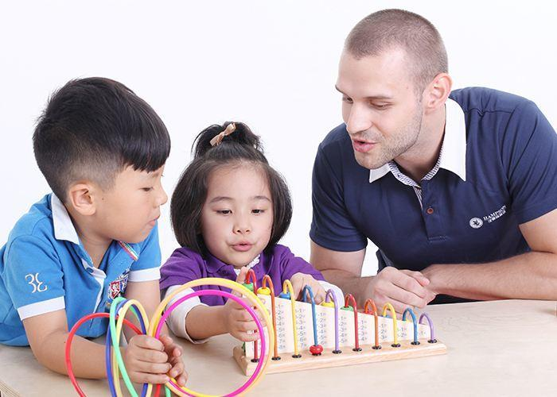

如何拉近人与人关系
一提到关系，很多人在大脑中就会想起了一些负面词语。很不好意思，在这篇文章中，我说的人与人之间的关系，没有你想象的那么复杂。这里强调的是人与人之间的链接。
最近有很多同事，经常的和我说，戴老师，你的班级怎么变的那么好！在你的管理之下，运动会年级第一、考试年级第二，你有什么样的绝招吗？鉴于谦虚，我只能就说，我的运气很好，抽到一个比较好的班级，再加上我的任课老师非常的负责，帮我管理的非常到位，孩子们也表现非常棒，因此我成绩就好了。
要是你还真要让我说出秘诀，那就是我能够和孩子们建立良好的关系，让孩子们时刻感觉到戴老师时刻都在关注他，时刻都是在关心他，特别是哪些后进生的孩子，更是需要我的关注和关心，一旦发现孩子们有闪光点，我就想尽各种办法，在班会课上，要么由同学们自己说，要么由班干部说，要么由我来说，将孩子好的地方说出来，那么我在平时的生活中，是如何关注孩子，关心孩子呢？下面我就结合以下四点谈谈我的做法。
第一、反馈
第一个和你分享的关键词，就是反馈，这个是人类的天性，我们祖先在非常恶劣的环境中，就是喜欢外界的反馈，就是因为具有这种反馈，才让我们人类能够遗传下来。比如说，我们祖先看到一个兔子，就会用尽全部力气去追兔子，最后将兔子追的精疲力尽，最后得到的反馈，能够美美的大餐一顿。
一样的道理，在现代生活中，我们也需要这种反馈，比如说，当你向一个朋友发一个微信，这个时候，你是非常期待对方能够给你回复，也就是反馈，一旦对方可能在忙于一件事情的时候，没有空回复你的微信时，你就会特别的难受。
在和孩子的沟通中，只要孩子们用心去做一件事情，无论是写谈心本，还是写成长记录册，我就会在班会课上非常认真的给予孩子反馈，一旦孩子们表现得很好，或者有待纠正的行为时，我也会大力表扬或者在课后给孩子提出自己的意见和建议。还有就是，针对整个班级，每天，每周孩子的表现情况，都会在德育量化考核表中反馈，并引导孩子们要非常重视这个考核表。
因此，要想要加深与孩子的关系，最重要的一点，我要及时反馈、具体反馈、经常反馈，让孩子们知道戴老师一直在和你们在一起，一直在陪伴你成长。
第二、需求
第二个和你分享的关键词，就是关注孩子的需求，当我走进班级里的时候，我就会用我的眼神一扫班级的学生，看看我们班级的同学们今天的眼神怎么样？今天状态怎么样，有哪些同学比较困，有哪些同学比较懒散，我都能够一眼看出来，一旦发现有些同的状态不是很好，或者有的同学很兴奋，有的同学很难受，我会及时去寻找他们，和他们聊天，谈话。
比如说，今天早上，我一走进班级里的时候，我看到我们班级的一个女孩子看到我们班级的德育量化考核表后，马上眼神不对，当她走出教室时，我就悄悄的走到她身边说，沈同学，你怎么了？于是果然不出我所料，这个孩子怀疑，上周德育量化考核表加错了，心情特别的难受，于是我就针对这样的事情给予帮助。
因此，在班级管理过程中，我经常会关注孩子们的需求，将注意力放在孩子们的身体，每个孩子都是需要老师们的关注，老师们的欣赏的。
第三、理解
第三个和你分享的关键词，就是要学会理解他人，每个人生存在这个世界都是非常不容易，无论是从身体上，还是从心灵上，都是期待别人的理解。当对方说了一件比较难受的事情，那么我们唯一能做的事情，就是将对方所说的话语再次说一遍，并且强调自己曾经也遇到过这样的事情，并给出自己的意见和建议。
比如说，昨天我在批改谈心本的时候，我发现有一个孩子是怎么说的“我发现我是班级的另类，我一个朋友都没有，同学们都看不起我”，当看到这样的话语时，我能够理解到这个孩子在班级中表现的非常的难受。于是我就亲自将这个孩子叫到我的办公室，表示理解这种状态，告诉他戴老师小时候，也有这种感受，后来，我学习成绩变得越好越好，平时多关心别人，自然朋友就会越来越多的，这个孩子看着我的眼睛说，我可以吗？我说，你可以的，戴老师相信你，自己要多加努力，平时要多帮助同学，你肯定可以的。
因此，我们理解别人时，就无形中拉近与孩子之间的距离，赢得孩子的信任，这样的话，我们说出自己的建议和意见时，孩子们才会倾听你。
第四、理由
最后我想和大家分享一个观点，就是理由，我想要表达的是，无论做什么事情，当你想要安排工作或者是叫某人做一件事情时，可千万不要直接说，你应该这样做，你应该那样做，在说教时，能不能给对方一个理由，即时这个理由算不上什么理由，这样对方会更加的容易接受。
比如说，昨天孩子们在上课的过程中，我从窗户上望了一下，看到我们班级的黄**同学，翘着二郎腿在听课，这种行为虽然孩子是很舒服，但是对老师，对同学非常不尊重，更为重要的是，损毁班级形象。于是，在下课的时候，我是怎么说的，黄**同学，过来过来，我和你说和悄悄话，我和你都是男的，这件事情不能和女同学说哦，戴老师小时候，有一个同学，经常翘着二郎腿，就和你刚才上课的时候一样，可能他翘的太多了，现在发育不全，虽然娶了老婆，可是现在和戴老师这么大，就是生不了孩子，医生说他发育不全。哇，这个学生听到我说的这个故事后，非常惊讶，后期翘二郎腿的现象少多了，甚至都不翘了。
因此，在说服别人做一件事情的时候，和对方说一个理由，而不是直接告诉他不要这么做，要这么做，这就相当于一栋房子，没有经过设计师设计就马上施工一样的道理，这样房子肯定会倒塌的，没有经过思考的说服，一定是会失败说服。
总之，今天和你分享了加强人与人之间关系的一些方法：反馈、理解 、 需求、 理由，并以我自己工作中与学生打交道的过程作为案例，期待能够给你带来一些价值。

5条评论
2楼 · 2017.10.25 11:32
分享的不错 对于不通的人得用不同的方式去教育。太直接反而适得其反。你的思路值得学习。
-
戴老师成长记录仪： @紫色的仙女
谢谢你对我的评论……非常赞同你的观点，再次感谢……
2017.10.25 13:35 回复
-
戴老师成长记录仪： @紫色的仙女
谢谢你对我的评论……非常赞同你的观点，再次感谢……
2017.10.25 13:35 回复
-
戴老师成长记录仪： @紫色的仙女
谢谢你对我的评论……非常赞同你的观点，再次感谢……
2017.10.25 13:35 回复
添加评论